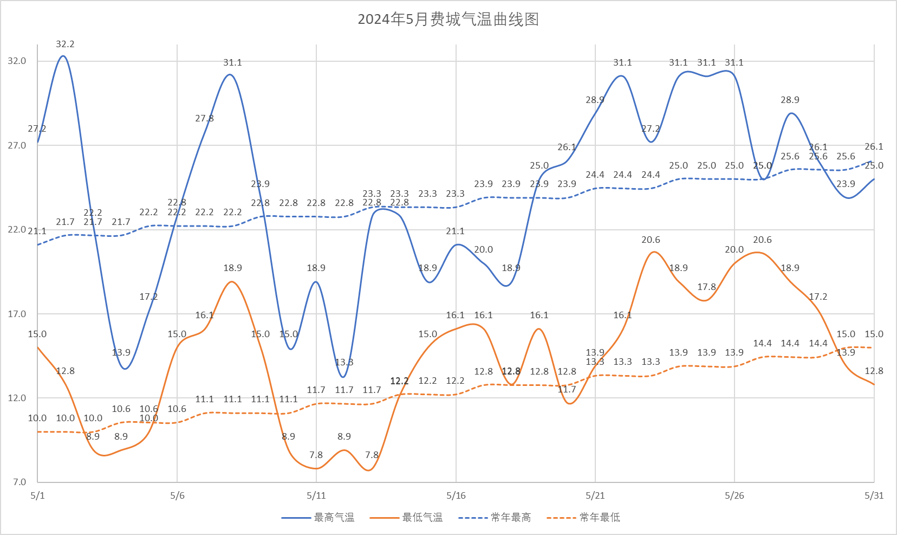
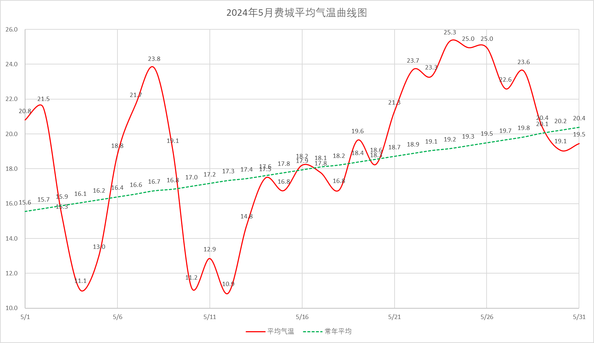
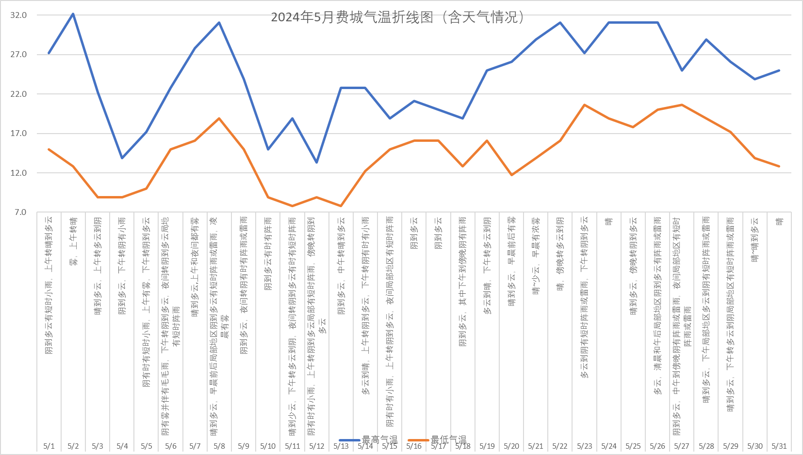
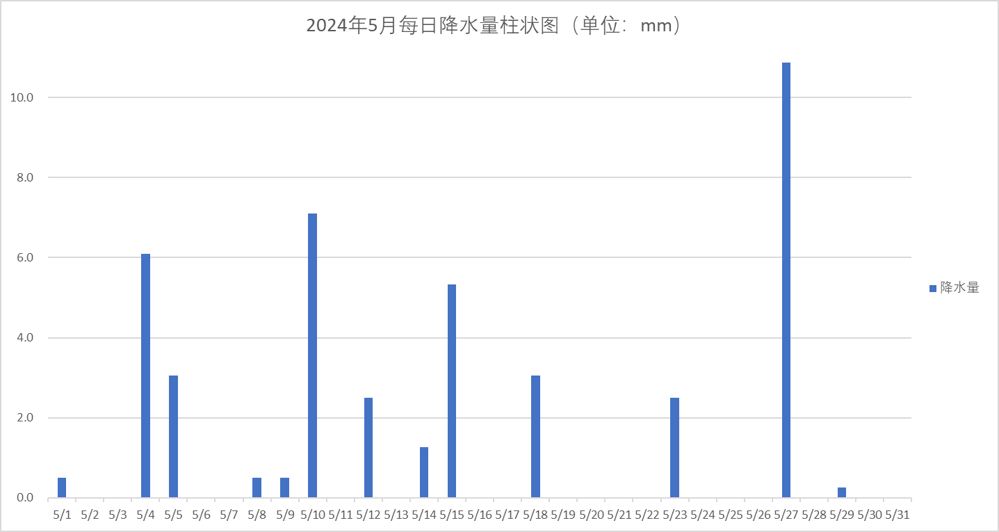
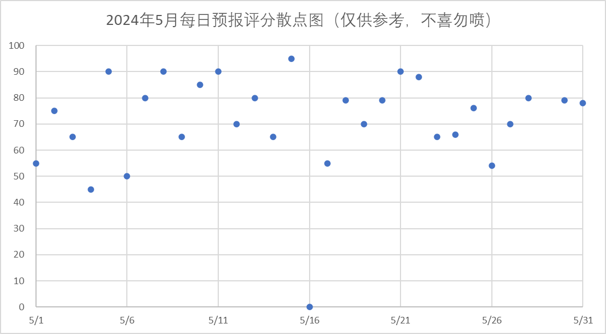
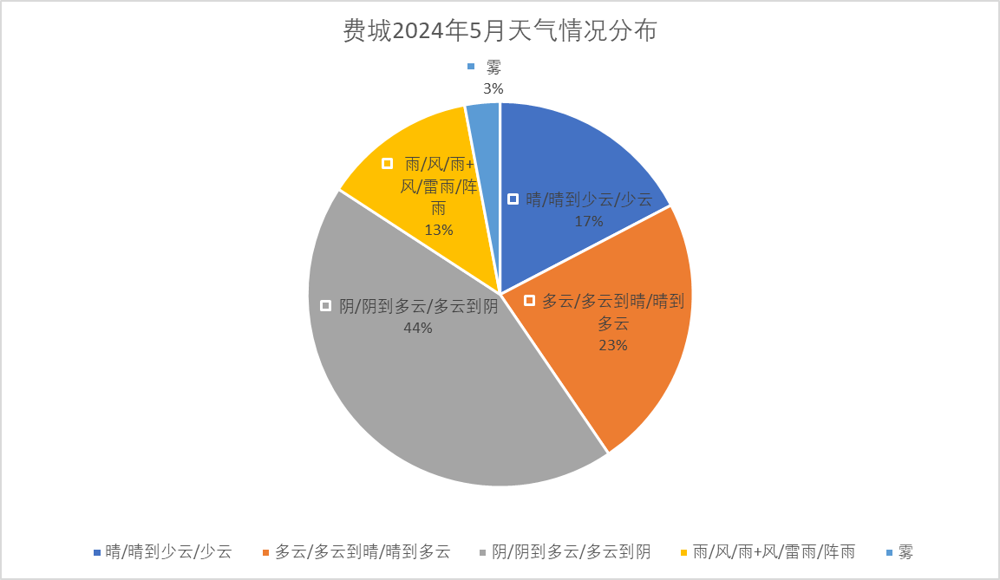

| 日期 | 天气状况 | 最高气温 (℃) | 最低气温 (℃) | 平均气温 (℃) | 常年最高 (℃) | 常年最低 (℃) | 常年平均 (℃) | 降水量 (mm) | 预报评分 |
|---|---|---|---|---|---|---|---|---|---|
| 5/1 | 阴到多云有短时小雨，上午转晴到多云 | 27.2 | 15.0 | 20.8 | 21.1 | 10.0 | 15.6 | 0.5 | 55 |
| 5/2 | 雾，上午转晴 | 32.2 | 12.8 | 21.5 | 21.7 | 10.0 | 15.7 | 0.0 | 75 |
| 5/3 | 晴到多云，上午转多云到阴 | 22.2 | 8.9 | 15.3 | 21.7 | 10.0 | 15.9 | 0.0 | 65 |
| 5/4 | 阴到多云，下午转阴有小雨 | 13.9 | 8.9 | 11.1 | 21.7 | 10.6 | 16.1 | 6.1 | 45 |
| 5/5 | 阴有时有短时小雨，上午有雾，下午转阴到多云 | 17.2 | 10.0 | 13.0 | 22.2 | 10.6 | 16.2 | 3.1 | 90 |
| 5/6 | 阴有雾并伴有毛毛雨，下午转阴到多云，夜间转阴到多云局地有短时阵雨 | 22.8 | 15.0 | 18.8 | 22.2 | 10.6 | 16.4 | T | 50 |
| 5/7 | 晴到多云,上午和夜间都有雾 | 27.8 | 16.1 | 21.7 | 22.2 | 11.1 | 16.6 | 0.0 | 80 |
| 5/8 | 晴到多云，早晨前后局部地区阴到多云有短时阵雨或雷雨，凌晨有雾 | 31.1 | 18.9 | 23.8 | 22.2 | 11.1 | 16.7 | 0.5 | 90 |
| 5/9 | 阴到多云，夜间转阴有时有阵雨或雷雨 | 23.9 | 15.0 | 19.1 | 22.8 | 11.1 | 16.8 | 0.5 | 65 |
| 5/10 | 阴到多云有时有阵雨 | 15.0 | 8.9 | 11.2 | 22.8 | 11.1 | 17.0 | 7.1 | 85 |
| 5/11 | 晴到少云，下午转多云到阴，夜间转阴到多云有时有短时阵雨 | 18.9 | 7.8 | 12.9 | 22.8 | 11.7 | 17.2 | T | 90 |
| 5/12 | 阴有时有小雨，上午转阴到多云局部有短时阵雨，傍晚转阴到多云 | 13.3 | 8.9 | 10.9 | 22.8 | 11.7 | 17.3 | 2.5 | 70 |
| 5/13 | 阴到多云，中午转晴到多云 | 22.8 | 7.8 | 14.8 | 23.3 | 11.7 | 17.4 | 0.0 | 80 |
| 5/14 | 多云到晴，上午转阴到多云，下午转阴有时有小雨 | 22.8 | 12.2 | 17.5 | 23.3 | 12.2 | 17.6 | 1.3 | 65 |
| 5/15 | 阴有时有小雨，上午转阴到多云，夜间局部地区有短时阵雨 | 18.9 | 15.0 | 16.8 | 23.3 | 12.2 | 17.8 | 5.3 | 95 |
| 5/16 | 阴到多云 | 21.1 | 16.1 | 18.2 | 23.3 | 12.2 | 17.9 | T | 0 |
| 5/17 | 阴到多云 | 20.0 | 16.1 | 17.8 | 23.9 | 12.8 | 18.1 | 0.0 | 55 |
| 5/18 | 阴到多云，其中下午到傍晚阴有阵雨 | 18.9 | 12.8 | 16.8 | 23.9 | 12.8 | 18.2 | 3.0 | 79 |
| 5/19 | 多云到晴，下午转多云到阴 | 25.0 | 16.1 | 19.6 | 23.9 | 12.8 | 18.4 | 0.0 | 70 |
| 5/20 | 晴到多云，早晨前后有雾 | 26.1 | 11.7 | 18.3 | 23.9 | 12.8 | 18.6 | 0.0 | 79 |
| 5/21 | 晴~少云，早晨有浓雾 | 28.9 | 13.9 | 21.3 | 24.4 | 13.3 | 18.7 | 0.0 | 90 |
| 5/22 | 晴，傍晚转多云到阴 | 31.1 | 16.1 | 23.7 | 24.4 | 13.3 | 18.9 | 0.0 | 88 |
| 5/23 | 多云到阴有短时阵雨或雷雨，下午转阴到多云 | 27.2 | 20.6 | 23.3 | 24.4 | 13.3 | 19.1 | 2.5 | 65 |
| 5/24 | 晴 | 31.1 | 18.9 | 25.3 | 25.0 | 13.9 | 19.2 | 0.0 | 66 |
| 5/25 | 晴到多云，傍晚转阴到多云 | 31.1 | 17.8 | 25.0 | 25.0 | 13.9 | 19.3 | 0.0 | 76 |
| 5/26 | 多云，清晨和午后局部地区阴到多云有阵雨或雷雨 | 31.1 | 20.0 | 25.0 | 25.0 | 13.9 | 19.5 | 0.0 | 54 |
| 5/27 | 阴到多云，中午到傍晚阴有阵雨或雷雨，夜间局部地区有短时阵雨或雷雨 | 25.0 | 20.6 | 22.6 | 25.0 | 14.4 | 19.7 | 10.9 | 70 |
| 5/28 | 晴到多云，下午局部地区多云到阴有短时阵雨或雷雨 | 28.9 | 18.9 | 23.6 | 25.6 | 14.4 | 19.8 | 0.0 | 80 |
| 5/29 | 晴到多云，下午转多云到阴局部地区有短时阵雨或雷雨 | 26.1 | 17.2 | 20.4 | 25.6 | 14.4 | 20.1 | 0.3 | / |
| 5/30 | 晴~晴到多云 | 23.9 | 13.9 | 19.1 | 25.6 | 15.0 | 20.2 | 0.0 | 79 |
| 5/31 | 晴 | 25.0 | 12.8 | 19.5 | 26.1 | 15.0 | 20.4 | 0.0 | 78 |
| 平均/和 | - | 24.2 | 14.3 | 19.0 | 23.6 | 12.4 | 17.9 | 43.6 | 71 |
| 极高最高温 | 出现日期 | 极低最低温 | 出现日期 | 极高最低温 | 出现日期 | 极低最高温 | 出现日期 | 平均高温 | 平均低温 | 平均气温 | 气温距平 |
|---|---|---|---|---|---|---|---|---|---|---|---|
| 32.2℃ | 2024/5/2 | 7.8℃ | 2024/5/11 & 5/13 | 13.3℃ | 2024/5/12 | 20.6℃ | 2024/5/23 & 5/27 | 24.2℃ | 14.3℃ | 19.0℃ | +1.1℃ |
| 天气情况 | 天数（天） |
|---|---|
| 晴/晴到少云/少云 | 5.375 |
| 多云/多云到晴/晴到多云 | 7.175 |
| 阴/阴到多云/多云到阴 | 13.550 |
| 雨/风/雨+风/雷雨/阵雨 | 3.983 |
| 雾 | 0.917 |





